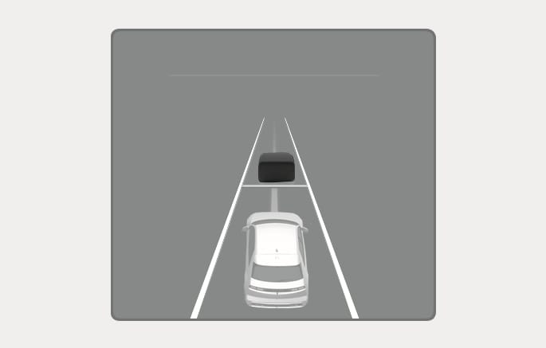
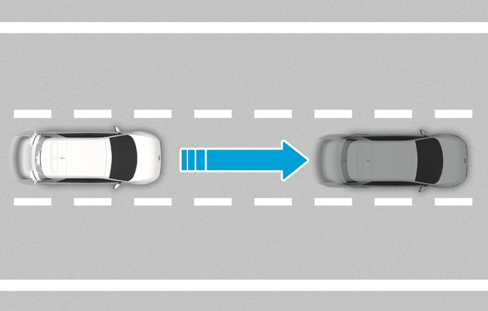
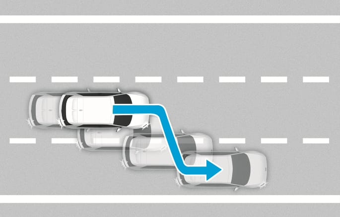

고속도로 주행 보조 (HDA)
전방의 차량 및 차선을 인식하여 작동 가능한 도로에서 전방 차량과의 거리와 설정속도를 유지하며 차로 중앙을 주행하도록 도와줍니다.
-
HDA는 Highway Driving Assist의 약자입니다
-
고속도로 주행 보조가 작동 가능한 도로는 고속도로, 도시 고속도로, 자동차 전용도로의 본선입니다. 분기선(IC/JC)에서는 작동하지 않습니다.
-
고속도로 주행 보조의 작동상태를 클러스터 주행 보조 뷰에서도 표시합니다. 클러스터를 주행 보조 모드로 설정하는 방법은 '클러스터 설정하기'를 참고하십시오.

2C_HDAActiveIndicatorInfo
고속도로 주행 보조 기능

2C_HDABasicFuntion
전방의 차량 및 차선을 인식하여 작동 가능한 도로에서 전방 차량과의 거리와 설정속도를 유지하며 차로 중앙을 주행하도록 도와줍니다.
고속도로 차로변경 보조 기능

2C_HDALaneChangeAssistFuntion
차로를 변경할 방향으로 방향지시등을 작동시키면 차로변경이 가능한지 판단하고 안전하게 차로를 변경하도록 도와줍니다.